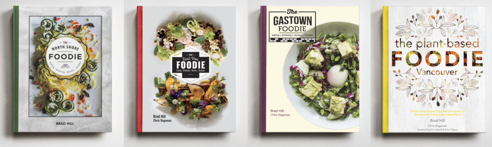
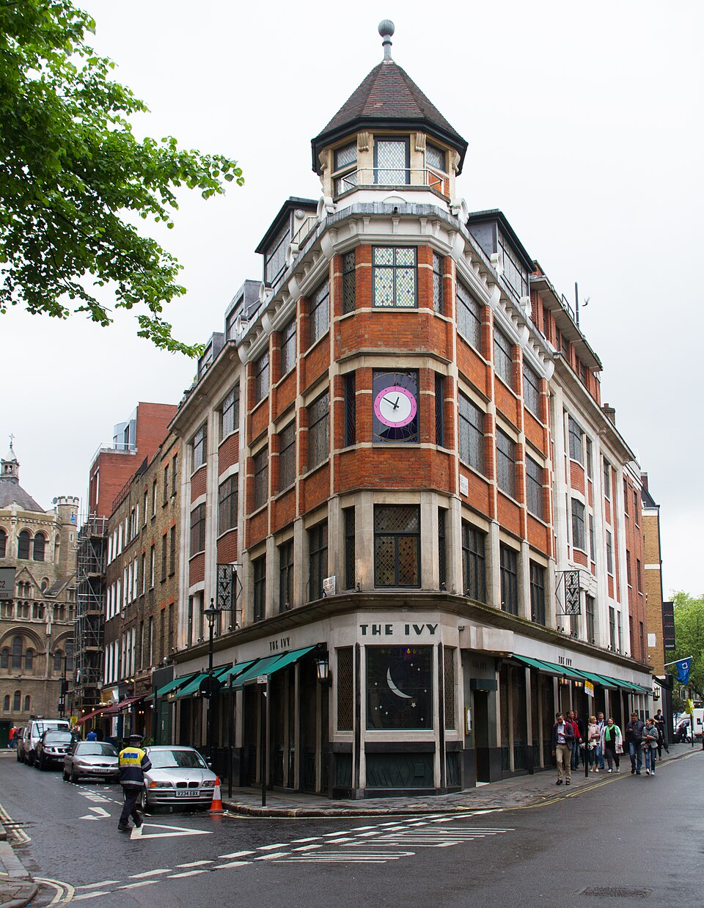
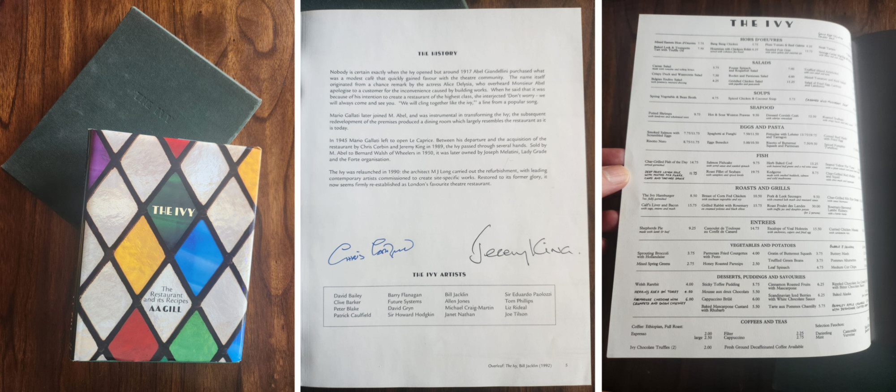

About
Here you will find all the recipes from the four Foodie Book cookbooks, published between 2015 and 2019; The North Shore Foodie, The East Van Foodie, The Gastown Foodie, and The Plant-based Foodie. These were cookbooks that told stories about restaurants and featured their recipes.
A lot has changed in the short-time since they were released; in an industry that changes quickly at the best of times. Even when I was working on the books I knew they would become a snap-shot of a point in time. Many of the restaurants featured have closed or morphed into something new, but many more are thriving and as fresh as ever. For all, I was honoured to be trusted to present their stories.
Perhaps I will get an opportunity to continue the series one day, but for now I have created this website as part of a personal project consolidating the web development skills I have picked up studying part-time at BCIT. For those interested in such things, this website is 100% handwritten HTML, standard CSS and vanilla JS, with the recipes all formatted in JSON. It is fully responsive, and mobile first. I designed it as I coded it, and now I know why this approach is not recommended! I'll be adding more features to it over time including things like key-word search, more animations, and more photos.

The North Shore Foodie 2015, The East Van Foodie 2016, The Gastown Foodie 2017 & The Plant-based Foodie - Vancouver 2018.Note about the recipes
The recipes were shared with me by the chefs and sometimes they were essentially ready to print but other times they were only very rough notes. I tested all the recipes in my home kitchen to the best extent I could and learned early on that restaurant recipes are very different from domestic recipes. Most of the time I needed to, at least, convert quantities to what makes more sense in a domestic kitchen. After my editing the chefs would sign off on what was printed but they did not test them again. On top of this ingredients vary wildly, for example, that turmeric you have sitting in your spice draw may have been there for a while, it is going to taste different from when it was fresh. All this is to say, treat these recipes as inspiration for your own experimentation! I am not a chef, I just love restaurants.
Inspiration for the books
In 1999 and 2000 I worked at a posh restaurant in London's West End called The Ivy. It has been serving rich, famous and glamorous theatre goers and actors classic English fine dining fare for around 100 years. It was the type of place that could have half-a-dozen A-listers in on a normal Tuesday night, and the paparazzi would literally block the front door from open to close.
Think of the famous people of that era in London, and I probably saw or served them. As staff there was a rule to not show even the slightest preference for fame. Everyone was treated equally. That said, it was pretty cool. I got shoved out of the way by security at the bread cutting station as Madonna was whisked out of the adjacent side-door to avoid paparazzi, I served Salman Rushdie soon after he came out of hiding, brushed Claudia Schiffer’s hand (delivering coffee), I was told I offered the Queen of Norway canapes but I didn't know who she was, I swear Kate Moss kept looking at me from the other side of the room to the point I asked her waiter to see if she needed anything but she didn't, I saw a real life Oscar (The Matrix – Special Effects), and served DeNiro and Puccino, and Ant and Dec... but now I'm just bragging.

By Tony Hisgett from Birmingham, UK - The Ivy , CC BY 2.0 , LinkMy role was about as low in the hierarchy as could be, and it was a strict hierarchy; this was well before chefs and maitre d's had to be nice to the help. As a commis-waiter, shifts were split between the ‘floor’ and ‘running’.
Floor shifts required preempting the real waiter’s every whim; presenting menus, delivering bread, butter, water, and coffee, transporting plates of food from the waiter's stations to the guests, and clearing and resetting tables. Basically, everything except talking to the guests.
Running shifts meant literally running food from the downstairs kitchen up to the restaurant floor. Three-foot oval trays would be stacked with cloched-plates up to 3 high and side dishes at the kitchen pass, we would then run with these, balanced on one hand above our shoulder, up a wide circular staircase, through a set of heavy swing doors and place them in one of three waiters stations on the main floor. We calculated that we would climb the equivalent of Mt Everest from sea-level every six months.
Just before I started at The Ivy, a book called ‘The Ivy; The Restaurant and its Recipes’ was published. Along with the recipes, the food critic A.A. Gill wrote a truly captivating account of daily life in the restaurant. Even though the guy was a bit of a twat, he knew how to write. This book, and Jamie Oliver (who I met at The Ivy), much later, inspired me to get into food photography. I worked for a few magazines and a cookbook publisher in Melbourne, and then in 2014 I moved to Vancouver.

My copy, signed by the owners, Chris Corban & Jeremy King.Between 2015 and 2019 I self-published the Foodie Book series. Each of the four books featured around 50 restaurants. These restaurants committed to buy between 20 and 40 books at cover-price and I used this money to pay for the printing. The restaurants could then sell these books to their customers and make their investment back... so their participation was essentially free. I then sold the books at all the local Indigo stores, on Amazon, and every other book shop that would take them, to, in theory, pay myself. This worked well enough but the combination of the workload (pitching sales, production, design, photos, editing, recipe testing, printing, distribution, marketing... literally everything) and the financial risk for each book took its toll. On average I made roughly minimum-wage each year after all the costs. This is considered success in the self-publishing world.
It probably would have made more sense to learn web design and development a bit sooner and do it all online!
If you have any feedback or see any problems, let me know.
Happy cooking!